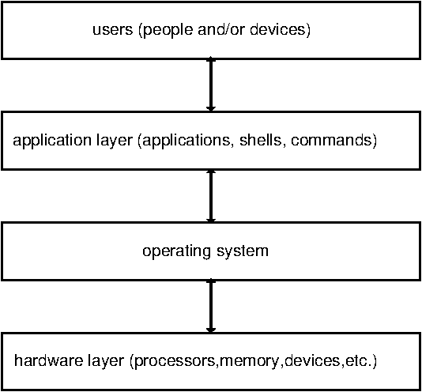
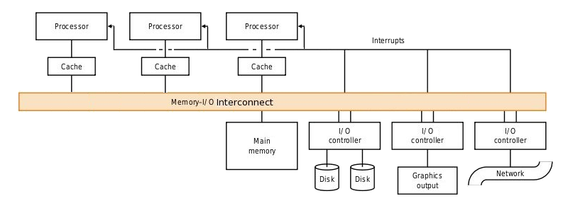
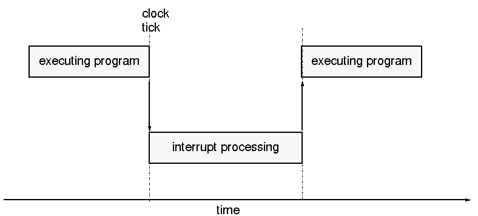
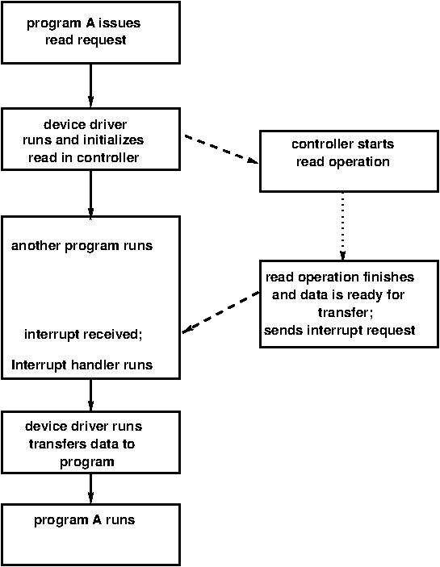
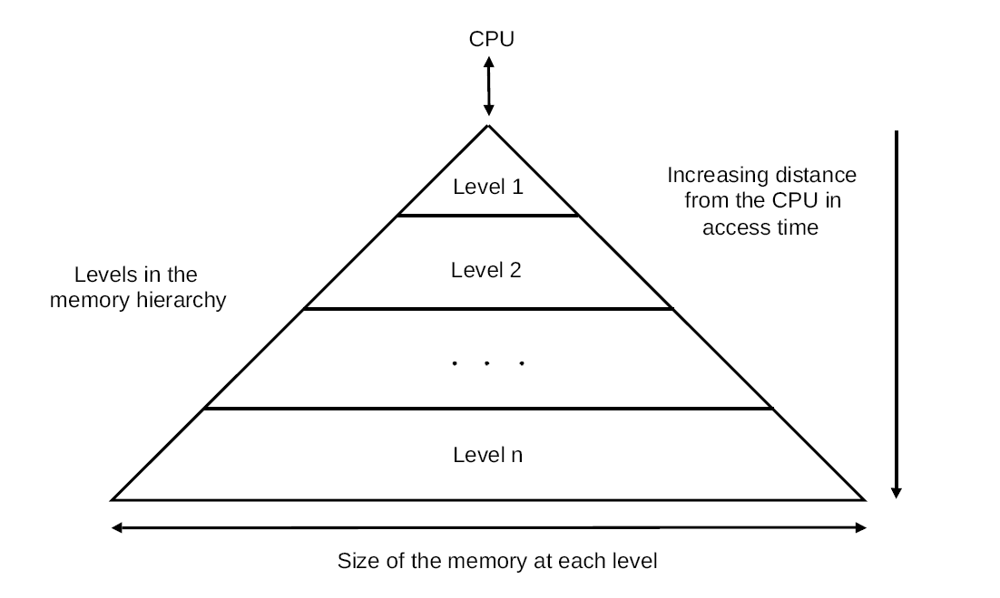
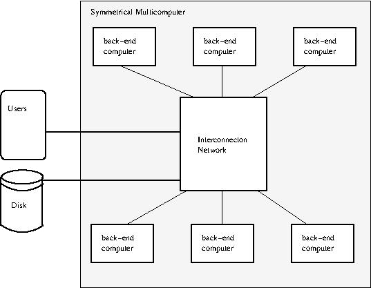
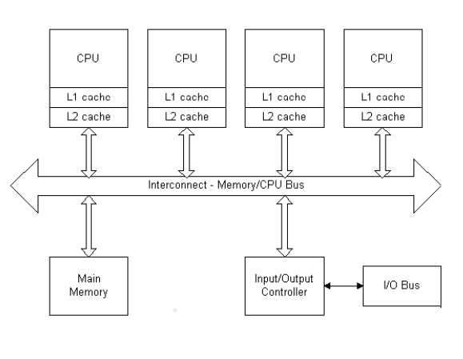
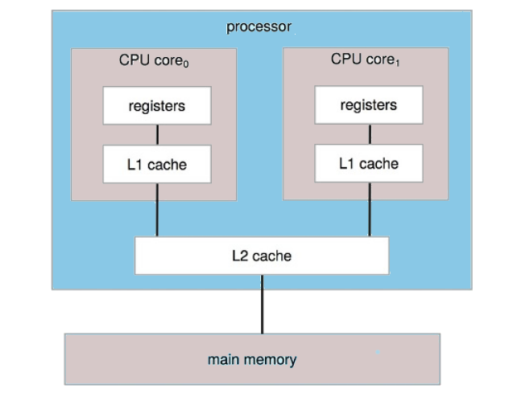
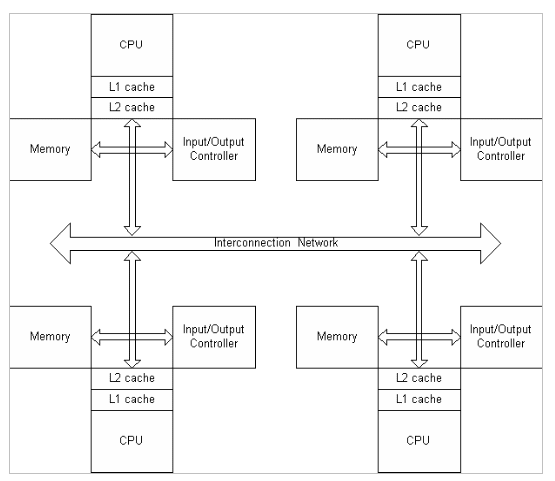

class: center, middle, title-slide ## CSCI 340 Operating Systems <br> ## Chapter 1: Introduction .author[ Stewart Weiss<br> ] .license[ Copyright 2020 Stewart Weiss. Unless noted otherwise all content is released under a [Creative Commons Attribution-ShareAlike 4.0 International License](https://creativecommons.org/licenses/by-sa/4.0/). Background image: roof of the EPIC Museum, Dublin, by Stewart Weiss. ] --- name: cc-notice template: default layout: true .bottom-left[© Stewart Weiss. CC-BY-SA.] --- name: tinted-slide template: cc-notice layout: true class: tinted --- name: overview ### What Is This Course About? This is an overview of .greenbold[ computer operating systems]. .redbold[It is not an in-depth study of them.] The major topics that it covers are - What operating systems do - How computer systems are organized and structured, including the software-hardware interface - How operating systems are structured - .greenbold[Processes] and their relationship to operating systems: process management, concurrency and parallelism, process synchronization, and deadlocks - The .greenbold[memory hierarchy] and its relationship to operating systems, including the operating system's role in managing memory - .greenbold[Secondary storage] and .greenbold[I/O devices] and their relationship with operating systems - A bit of the history of operating systems and how open source operating systems have influenced their development. .footnote[ These slides are intended to accompany reading of the textbook, _Operating System Concepts, by 10th Edition_ by Silberschatz, Gagne, and Galvin. ] --- name: objectives ### This Chapter's Objectives The goals of this chapter are to make sure that you understand - .redbold[what] operating systems actually do and what they do not do - .redbold[how] operating systems do what they do - how operating systems are structured, and - enough about the underlying hardware to give context to the tasks an operating system must perform, and how it interacts with that hardware layer, including - general organization of a computer system, including multiprocessor systems - interrupts and their relationship to operating system functionality - dual mode operation - storage and memory technologies and their impact on operating systems --- name: computer-system-components ### Computer System Components In general, a .bluebold[system] is a cohesive collection of interrelated and interdependent parts. A .bluebold[computer system] includes the .greenbold[hardware] and the .greenbold[software] that together make the aggregate useable by .greenbold[users], which include not just people, but machines or other .greenbold["things"]. - .bluebold[Hardware] include processors, I/O devices, all types of memory and secondary storage. - .bluebold[Software] is either the .greenbold[operating system] or the software that uses it, called the .greenbold[application layer]. - The <span class=bluebold>operating system </span> is the software that interacts directly with the hardware; applications do not. - <span class=bluebold> The application layer </span> include software development tools, web browsers, all types of media editors and viewers, shells, commands, etc. <span class=redbold>_User data is part of the application layer_ </span>. --- name: layered-view ### Layered Structure of Computer System These parts of a computer system are structured into .greenbold[layers]: .center[  ] The only interactions are between adjacent layers. .redbold[For example], - applications do not directly communicate with or control hardware, and - users only interact with the application layer (which includes shells like `bash` in Linux.) --- name: opsys-requirements ### Operating System Requirements The preceding picture implies three important responsibilities of an operating system: 1. The operating system alone must control the hardware resources. 1. The operating system alone must enable and control the execution of all other software on the computer. 1. The operating system must give users the ability to develop and run applications and manage their data. -- But these are not the only things for which it is responsible. --- name: opsys-requirements2 ### More Considerations There are other considerations that affect what else operating systems is required to do. -- There are requirements coming from what users want: -- - Users want their time spent on the computer to be used efficiently. - Users want their data to be secure. - Users want using the computer to be as convenient and easy as possible. - Users may want to be able to share data and applications selectively with other users. -- A computer, on some level, exists to produce value, directly or indirectly, for its owner. The more productive it is, the more value is created for the owner. This leads to additional requirements: -- - The computer resources should be utilized as efficiently as possible, maximizing the amount of work it performs per unit time. - The computer resources should be protected from all possible intentional and unintentional abuses. - It should be possible to allocate reqources as needed among various users. --- name: opsys-requirements3 ### Additional Operating System Requirements Preceding considerations lead to these additional tasks that operating systems must perform: - An operating system should manage the resources of a computer system in such as way as to allow reliable sharing of data and applications. - An operating system should provide security and protection of all hardware and software on the computer system. - An operating system should provide robust error handling and recovery. - An operating system should allocate resources fairly to users while trying to maximize overall throughput, minimize response time to as many users as possible, and maximize the utilization of all hardware resources in the system. --- name: opsys-services ### Categories of Services Provided By Operating Systems The most common services performed by operating systems can be categorized as follows. -- - Program execution - loading and executing programs; providing synchronization, communication, and security -- - I/O operations - providing all I/O services to users and apoplications -- - File system - creating and maintaining file system and means of manipulating it -- - Communication - providing mechanisms for running programs to communicate -- - Error detection and recovery - detecting and handling error conditions -- - Protection and security - preventing unauthorized or improper access to all resources, and protecting users from each others attempts to invade privacy or corrupt data. --- name: opsys-defs ### Trying to Define "Operating System" People disagree about the definition of the term "operating system." -- - Some say it is just the program, often called the .greenbold[kernel], that is loaded into memory on start-up and remains in memory, controlling the computer, until it is shut down. -- - Others say it is the collection of programs, including the kernel, that provide services to applications and users, including all .greenbold[system programs]. We discuss system programs shortly. -- To remove all ambiguity in this course, the .redbold[operating system is defined as] .redbold[ the kernel program and nothing more.] --- name: system-programs ### System Programs .bluebold[System programs] are typically the set of programs shipped or downloaded when the operating system is installed. .redbold[For example]: - .greenbold[Software updaters/package managers] - programs that track, download, and install updates to your operating system or other software or install new software. - .greenbold[Compilers, linkers, loaders, debuggers, etc.] - programs that enable you to build your own software. - .greenbold[File management commands] such as commands to navigate the file system, list directories, and so on. -- On a .greenbold[Linux system], system programs include most of the commands that you typically type on the command line. To be more precise, these are commands that are found in the directories, `/bin`, `/usr/bin`, `/usr/sbin`, and `/sbin`. Most of these programs can only be invoked as commands on the command line in a terminal window, but some can (also) be invoked through a graphical user interface such as `Gnome` using menus or clickable icons. -- .redbold[Do not confuse system programs with applications.] Applications are usually programs that you install. Some applications come "bundled" with the operating system for your convenience. Applications are typically installed in the directories `/usr/local/bin` or `/opt`. --- template: default layout: true --- name: computer-organization class: center, middle, inverse ## Computer Organization We examine the physical components of a computer system and how they interact with each other. --- template: tinted-slide layout: true --- name: computer-org-overview ### The General Structure of a Typical Computer A modern, general-purpose computer consists of one or more .greenbold[CPUs], one or more .greenbold[memory units], and a set of .greenbold[device controllers], all of which are connected by a common .greenbold[bus], usually called the .greenbold[system bus]. The figure below illustrates how these components inter-connect. Notice that there is a separate line labelled "interrupts", to be discussed shortly. .center[  ] --- name: computer-components-1 ### Main Components #### CPUs Most modern computers contain more than one CPU. When several CPUs are integrated into a single chip, each one is called a .bluebold[core] and the machine itself is called a .bluebold[multi-core processor]. -- #### System Bus The .bluebold[system bus] is a single communication path that connects the major components of a computer system, combining the functionality of a .greenbold[data bus], an .greenbold[address bus], and a .greenbold[control bus]. A system bus typically consists of many parallel wires. The number of wires is called the .bluebold[width] of the bus. -- #### Memory .bluebold[Memory units] are self-contained primary storage, i.e. random-access, devices. They are usually volatile and are connected directly to the system bus. Memory units are controlled by a .bluebold[memory controller], which synchronizes access to the memory from the devices that want to access it, and responds to requests to transfer data to and from memory. --- name: computer-components-2 ### Main Components (Continued) #### Device Controllers A .bluebold[device controller] is a special-purpose processor that controls a specific type of device, such as a disk or a keyboard. It may be connected to multiple instances of this type of device, or just one. It typically has a number of special-purpose registers, buffer memory, and control logic that responds to specific instructions. A device controller is responsible for moving data between the devices that it controls and its local memory. It responds to instructions submitted to it through the bus, and can query the status of the attached devices. -- Because device controllers are special-purpose microprocessors with their own unique instruction sets, the software to control them is also highly specialized and specific to each different one. The code needed for an Ultra320 SCSI disk controller is very different from the code needed for a Parallel ATA disk controller. -- This is why the code written to control these controllers are separated from the rest of the operating system and placed into their own modules called .greenbold[device drivers]. --- name: device-drivers ### Device Drivers In a modern operating system, .redbold[every device controller has an associated device driver.] -- A .bluebold[device driver] is a program or software module that can "drive" that controller in much the same way that a person can drive a car. It "knows" the controller's instruction set and its interface and can send instructions to the device to perform actions, such as reading a number of blocks of data from a disk to transfer to a memory location, or to stop or start the device. -- Most operating systems have the ability to detect which device drivers they need and integrate them into the operating system itself as separate modules. The primary purpose of the device drivers is to provide a higher layer of abstraction, so that the operating system programmers do not need to know the details of the device controllers to write code to perform tasks using those devices. .redbold[For example], a serial port might only present two "public" functions, one to send data and one to receive data. A device driver that implements these functions would communicate with the particular serial port controller installed on the computer. Different serial ports have different instruction sets and architectures, so each serial port may have a different device driver, but each device driver hides the hardware-specific differences and presents the same software interface to the software layer above. The operating system programmer just needs to know the common software interface that the device drivers present to them. --- name: computer-operations ### Computer System Operations Peripheral devices such as keyboards, mice, network interfaces, and external storage devices can operate concurrently with the processors. .redbold[For example], a program might be running on a CPU while a user types on a keyboard, or moves a mouse, or while data is arriving from the local network. -- These concurrent activities usually involve moving data to or from memory, and/or may require that the CPU take some specific action in response to specific events. .redbold[Example]. When the user types a "Control-C" on the keyboard while a terminal window has focus and a program is running in the terminal's commmand line (the shell), that program is typically terminated. Somehow, that Control-C must be detected and the fact of its occurrence transmitted to a program that can terminate the running program. A lot has to happen to make this work. -- - What part of this is done by hardware? Which hardware? - What part of this is done by software? Which software? -- The key to all of this is the use of .greenbold[interrupts]. .redbold[All modern operating systems are interrupt-driven]; after the boot completes, they run only as a result of interrupts. --- name: read-operation ### Typical I/O Read Operation To illustrate, we discuss what happens when a running program issues a request to read data from a hard disk. The program's read request causes a device driver to run. We ignore the steps leading to this for now. -- - The device driver loads the appropriate registers in the device controller in order to start the read operation. When it has done this, some other program is chosen to run on the CPU. -- - The device controller responds by examining the contents of these registers and it determines (1) that it is a read operation and (2) which data must be read. -- - The controller starts the transfer of the data from the device to its local buffer. -- - When the transfer of data is complete, .redbold[the device controller informs the device driver that it has finished its operation]. -- - The device driver runs again. It is responsible for the remainder of the work, which includes notifying the operating system that the I/O is complete and transferring the data to an appropriate place in memory. -- .redbold[ How does the controller inform the device driver that it has finished its operation? ] -- By issuing an .greenbold[interrupt request]. --- name: interrupt-overview ### Interrupt Overview What are interrupts and interrupt requests? An .bluebold[interrupt] is a temporary break in the continuity of the process running on the processor in order to respond to some condition needing attention. When an interrupt takes place, the state of the processor is saved, and special code runs that .greenbold[handles] the specific condition requiring attention. This code is called either an .bluebold[interrupt service routine] (.bluebold[ISR]) or an .bluebold[interrupt handler]. A device needing attention can request an interrupt by sending a signal to the processor. This signal is called an .bluebold[interrupt request]. The acronym .bluebold[IRQ] is short for interrupt request. The distinction between interrupts, interrupt requests, and the events requiring attention is often blurred, and people may call any of them an interrupt for short. Thus, if a hard disk completes a read operation and issued an IRQ as a result of it, we might say it issued an interrupt, or it raised an interrupt, and we might also say the read event itself caused an interrupt. --- name: interrupt-visualized ### Interrupts Visualized Every computer has a clock or timer that causes interrupts at regular intervals. Every 1 millisecond or so, the clock sends an interrupt request so that the system can keep track of the time or do maintenance. The running program is interrupted and a routine runs that increments the count of ticks. When it finishes, the interrupted program resumes execution, as shown below. .center[  ] --- name: interrupt-mechanism1 ### Interrupts Step-By-Step A simplification of what happens is as follows. 1. A device issues an interrupt request by sending a signal on the system bus. -- 1. The signal is received by the CPU. -- 1. The CPU saves the value of the program counter (PC). -- 1. It loads the PC with the starting address of the interrupt service routine for that device. -- 1. The contents of the remaining registers are saved in an appropriate place. -- 1. The interrupt service routine (ISR) runs. -- 1. When the ISR finishes, the saved registers are restored and the PC is loaded with the saved value; the interrupted computation is resumed. -- .redbold[Step 4 suggests that the CPU knows which device caused the interrupt. How does it know this?] -- .redbold[In step 4, how does the system know the starting address to load ino the PC?] --- name: interrupt-service-routine ### Finding and Running the Interrupt Service Routine There are two different methods of determining which device caused the interrupt and where the starting address of its interrupt service routine is stored. #### Method 1: .bluebold[Polling the Devices] (Rarely Used) An IRQ is received by the CPU but it does not indicate which device caused the interrupt. There is a single ISR that runs when an interrupt occurs. This ISR sends a signal to each device that amounts to the question, "did you just send an IRQ?". The first device to answer "yes" is the one that will be serviced. The ISR has code that causes a jump to the correct device driver. This method is called .bluebold[polling] because it polls each device. It is inefficient. -- #### Method 2: .bluebold[Vectored Interrupts] (Almost Always Used) The interrupt lines on the bus are .greenbold[vectored]: each device can send its identity along with the IRQ. When the CPU receives the IRQ, it can extract the identity of the device that needs service. The identity is an integer value. The system maintains a table, usually in low memory, that maps each integer device identity to the starting address of its ISR. This table is called the .bluebold[interrupt vector] or the .bluebold[interrupt vector table]. If there are many devices, sometimes the table is a linked list of ISR addresses. --- name: interrupt-masking ### Interrupt Masking There are two types of interrupts: .greenbold[maskable] and .greenbold[non-maskable]. A .bluebold[maskable interrupt] is one that can be disabled temporarily. There is a register that contains a bit for each interrupt type, and that bit is used to determine whether or not to disable (i.e., mask) the interrupt. Maskable interrupts are non-critical. A .bluebold[non-maskable interrupt] is one that cannot be disabled. It must be serviced. They are not affected by the interrupt mask register. Examples are errors from memory and timer interrupts. In some systems, disabling an interrupt means ignoring it completely. In others, it is possible to .greenbold[defer] processing the interrupt if it is disabled. Deferred interrupts are saved, usually in a queue, and handled in a specific order at a future time. --- name: interrupt-priorities ### Interrupt Priorities Some interrupts have higher priorities than others: if the CPU is in the middle of servicing an interrupt request, and a higher priority request occurs, it should interrupt the current ISR. On the other hand, if an interrupt request has lower priority then one being serviced by the CPU, it should be ignored. Most systems have a method of prioritizing interrupts, either in hardware alone, or in both hardware and software. #### .redbold[Example] The .greenbold[mask register] can be used to set the interrupt priority level of the processor using a left-to-right ordering of the mask bits. - If an interrupt occurs whose bit is to the left of another one, it has higher priority. By turning off all bits to the right of a given bit, the processor masks all interrupts lower than a given level. - If an interrupt occurs that is lower priority than the current priority level, it is ignored. If one occurs that is at equal or higher priority, the currently running ISR is interrupted and the ISR for the new one runs. - Each device has an associated priority level, and the ISR for that device runs at that priority level. --- name: exceptions ### Traps and Exceptions In English, an exception is an uncommon event. In computing it is supposed to be an uncommon event. An .bluebold[exception] is a software-generated interrupt. It is caused by the execution of a software instruction. Examples of exceptions are - floating-point errors such as divide-by-zero, - attempts to execute invalid opcodes, and - attempts to access memory locations outside of the process's allowed memory. The term .bluebold[trap] is often used as a synonym for exception. Some people make a subtle distinction between traps and exceptions. For example, the Intel 80x86 architecture makes the following distinction: - A .bluebold[trap] is a programmer-initiated (and consequently expected) transfer of control to a handler routine, whereas - An .bluebold[exception] is an automatically generated trap (coerced rather than requested) that occurs in response to some exceptional condition. -- So traps can be coded into programs intentionally, whereas exceptions occur because of errors. We will see how traps are used in the next chapter, when we discuss .greenbold[system calls]. --- name: io-cycle ### Interrupt-Driven I/O .left-column[ Recall that modern operating systems are interrupt driven; they only run as a result of interrupts. All I/O occurs as a result of interrupts. To illustrate this, in the figure to the right, we have augmented the sequence of steps described in the slide, [Typical Read Operation](#read-operation) to show how interrupts are used in the read operation. ] .right-column[  ] --- template: default layout: true --- name: storage class: center, middle, inverse ## Storage We review concepts of storage as well as the various types of storage used in computer systems. --- template: tinted-slide layout: true --- name: storage-concepts ### Storage Concepts Storage media and devices can be characterized in many ways, such as by their cost, reliability, capacity, and so on. We define the key properties of interest. -- - .bluebold[Capacity] is total amount of stored information that a storage medium or device can hold. It is measured in either .greenbold[bits] or .greenbold[bytes], both of which are defined in the next slide. -- - .bluebold[Volatility] refers to whether or not the information stored on a storage medium is retained when power is not continuously supplied to that medium. A .greenbold[non-volatile] storage medium retains the information whereas a .greenbold[volatile] one does not. -- - .bluebold[Access time] is the amount of time that it takes the medium or device to access the information at a given location. This time may vary depending on whether the access is to read information or to store it. -- - .bluebold[Accessibility] refers to two different types of access to the locations on a storage medium. - <span class=bluebold> Random access </span> media are those such that all locations can be accessed in about the same amount of time. - <span class=bluebold>Sequential access </span> media are those such that the information must be accessed in sequential order. This implies that the time to access a particular piece of information depends upon where that information is stored on the medium. Magnetic tape is an example of a sequential access medium. --- name: storage-measurements-1 ### Measuring Storage: Bits, Bytes, and Words - A .bluebold[bit] is the smallest unit of information. A bit has two possible values, which we represent as the numbers 0 and 1. The unit symbol for a bit is lowercase 'b'; _128b_ means 128 bits. -- - A .bluebold[byte] is the .redbold[smallest addressable unit of storage] in a computer and consists of .redbold[eight bits]. There have been many different definitions of a byte, but over time, the eight-bit byte became the _de facto_ standard. The unit symbol for a byte is uppercase 'B', e.g., _4096B_ means 4096 bytes. -- - A .bluebold[word] is the size of a given computer’s .redbold[native unit of data]. - Typically, it is the size of a general-purpose register, the size of a machine instruction, and the size of the data chunk that is transferred to and from memory. - A word consists of one or more bytes. The .bluebold[word length] or .bluebold[word size] is the number of bits in a word. - A "64-bit" architecture has a word length of 64 bits or eight bytes. It has 64-bit registers and 64-bit memory addresses. --- name: storage-multiples ### Measuring Storage: Larger Amounts In practice, we often describe amounts of data and storage sizes that are orders of magnitude larger than bytes and words. We need to talk about thousands, millions, billions, trillions or more bytes, and so we use units whose sizes are commensurate with these magnitudes. Below are commonly used units and their meanings. | | | | | |:--- |:--- |:--- |:--- | | __Unit__ | __Actual Number of Bytes__ | __As Power of 2__ | __Abbreviation__ | | kilobyte | 1024 | 2^10 bytes | 1 KB | | megabyte | 1048576 | 2^20 bytes | 1 MB | | gigabyte | 1073741824 | 2^30 bytes | 1 GB | | terabyte | 1099511627776 | 2^40 bytes | 1 TB | | petabyte | 1125899906842624 | 2^50 bytes | 1 PB | Some computer manufacturers misuse these terms. For example, a hard disk vendor might say a disk has 500 gigabytes when it has 500 billion bytes. Storage is measured in these binary-based units, but transmission rates, bandwidths, and other rates expressed as a function of bytes per unit time generally use the decimal approximations or express in bits per time. Thus, a bandwidth of 50MB/second means 50,000,000 bytes per second. --- name: storage-components ### The Different Types of Storage Modern computers have many different types of storage: - .bluebold[Primary storage] refers to storage that is directly accessible to the processor. - .bluebold[Secondary storage] refers to storage that is not directly accessible to the processor, but can be accessed through the I/O channels, and so is still considered to be .greenbold[on-line]. - .bluebold[Tertiary storage] refers to storage that is not directly accessible to the processor, and cannot be accessed through the I/O channels without some intervention by a human or a mechanical system. Tertiary storage is therefore .greenbold[off-line].super[1]. The different storage components of a general purpose computer system are as follows, listed in order of increasing access time: | | | | |:--- |:--- |:--- | | __Component__ | __Type__ | __Range of Access Times__ | | CPU registers | primary storage | 0.2 - 1.0 ns | | CPU cache (levels 1, 2, and 3) | primary storage | 0.5 - 2.5 ns | | Random access memory | primary storage | 50 - 70 ns | | Solid-state drives | secondary storage | 5000 – 50000 ns | | Magnetic disks | secondary storage | 5-20 million ns | | Optical disks | tertiary storage | | | Magnetic tape | tertiary storage | | .footnote[ 1 There are tertiary storage systems that are semi-online because a robotic system can automatically attach them to the computer system. ] --- name: memory-hierarchy ### The Memory Hierarchy The preceding list of components forms a hierarchy in which components nearer the top are faster and have smaller capacity than those that are further away. For example, registers are above CPU caches, which are above random access memory, and these are all above magnetic disks. Tertiary storage is orders of magnitude slower than all of these. .center[  ] --- name: storage-cpu ### Storage in the CPU The CPU registers have the fastest access time of all storage in the computer system. However, their total capacity is small; a program cannot be stored in registers! In 2020, there are sixteen 64-bit general purpose registers in a typical desktop computer. Programs are stored in main memory and data and instructions are brought into the CPU as needed. --- name: storage-ram ### Random Access Memory .bluebold[Random Access Memory] (.bluebold[RAM]) is the memory in which the operating system, programs, and data reside when the computer is turned on. When a program is running, its executable image is stored in RAM. RAM is also called .greenbold[primary memory]. RAM is volatile - it loses all data and programs when the machine loses power. -- - There are many different technologies for implementing RAM, but the most common is .bluebold[Dynamic Random Access Memory] (.bluebold[DRAM]). The alternative is .bluebold[Static Random Access Memory] (.bluebold[SRAM]). - DRAM is dynamic because the information is stored in .greenbold[capacitors], which cannot retain a charge without being periodically refreshed with energy. DRAM's refresh cycles and the fact that reading the data destroys the capacitor contents make DRAM slower than SRAM. DRAM access times are roughly from 50 to 70ns. - SRAM is very expensive and its capacity is orders of magnitude smaller than DRAM. Therefore it is not used for primary memory and instead is used for the various types of processor cache. SRAM access times are roughly from 0.5 to 2.5ns. --- name: storage-magnetic-disk ### Magnetic Disk Drives and Solid-State Drives .bluebold[Magnetic disks], commonly called .bluebold[hard disks], are the most common medium of secondary storage. Their capacities vary greatly, but they range from one to sixteen terabytes. Hard disk access times range from 5ms to 20ms. Expressed in ns, this is 5,000,000ns to 20,000,000ns, significantly slower than RAM of any kind. Magnetic disks are non-volatile. They retain all information when the power is removed. They are where the file system resides, and they also provide a type of storage known as .greenbold[swap] space, which is used in virtual memory systems to extend the capacity of primary memory. All operating system components are stored on the secondary storage medium, and all user programs and data. Less common are solid-state drives, which are not mechanical and therefore last longer. They have smaller capacity and are more expensive per bit than magnetic disks. Because there are a limited number of possible writes and rewrites, they are more suited for storing mostly read-only files and data, such as the operating system software. --- name: storage-tertiary ### Tertiary Storage Media Tertiary storage is used for backing up systems or archiving data. Sometimes optical disks are used, but their capacity is small and the ability to write and rewrite them is limited. Ordinary DVD disks can store no more than a few gigabytes and Blu Ray disks a few hundred gigabytes. In contrast a magnetic tape can store 800GB and many systems use robotic libraries to perform backups to tape and restorals from tape. One can also purchase hard disks that are removeable and external. These can be used for backing up a system. These external disks have the same range of capacities as internal disks and are just slightly slower because they are accessed through a slower bus than the internal disks. --- name: storage-cache ### Cache What is .greenbold[cache]? -- In ordinary usage, a .bluebold[cache] is a safe place to hide things. As a verb, .greenbold[to cache something] is to hide it in a secure place. In computer terminology, the word "cache" generally means a fast but small storage component that is used by a device as a temporary holding area for data. For example, a cache is used by the processor to hold frequently used data as well as instructions. A cache is also used by hard disk drives and other secondary storage devices as a place to hold data being written to or read from the device. --- name: processor-cache ### Processor Cache Registers in the CPU are fast but there are not many of them. They cannot store frequently used data. DRAM is vast in comparison, but it is slow to access. The processor only accesses its data by putting requests on the system bus and waiting. This slows down computations, as the processor must stall, waiting for data to be available. SRAM is a much faster type of memory than DRAM, but because it is expensive and because it takes up more "real estate" on a chip, it cannot have the same large capacity as DRAM. However, smaller capacity SRAM can be placed on the processor chip as a compromise - it can store much more data than registers, and it is much faster than DRAM. It is used to create .greenbold[processor cache]. -- The .bluebold[processor cache] is a level of the memory hierarchy between the CPU and main memory. It is is built using SRAM technology and is integrated into the CPU. It stores data and instructions that are frequently accessed, reducing accesses to the slower DRAM. When data is missing in the cache, it is copied into it from main memory. -- Questions such as how big the cache is, what size chunks are stored in it, how data is located in it, which data is replaced if it is full, what happens when data in the cache is changed, and so on, are the subject of a computer architecture course and are not answered here. --- name: dma ### I/O and Direct Memory Access Many devices are slow devices that handle small chunks of data. For example, keyboards and pointing devices deliver a byte at a time. Other devices may be required to deliver thousands of bytes in a single I/O operation. File operations typically cause the transfer of entire disk blocks, which can be anywhere from 1KB to 4KB or more. To transfer this much data using the interrupt mechanism for each byte or word of data would require a lot of CPU time and a lot of interrupts, slowing down the computer. -- .bluebold[Direct Memory Access] is a method of I/O that transfers data at a very high bandwidth with low overhead. It removes the processor from the operation of transferring large amounts of data to or from a device. The processor can continue to execute other instructions while the transfer takes place. In DMA, the processor, under program control authorizes a device to take charge of the I/O transfers to memory, allowing it to be the .greenbold[bus master] until the I/O is completed. A device with this capability is called a .bluebold[DMA controller]. Many devices use DMA, including disk drive controllers, graphics cards, network cards and sound cards. In some systems, such as those with a PCI bus, each device has its own internal DMA controller. In others, such as ISA, there is a central DMA controller. --- name: dma-steps ### DMA Operation 1. A program running on the CPU gives the DMA controller - a memory address, - the number of bytes to transfer, - a flag indicating whether it is a read or a write, and - the address of the I/O device and data involved in the I/O. 1. The DMA controller becomes the bus master on the memory bus. 1. If it is an input operation, the device will then start sending data to the DMA controller, which will buffer the data, and store it in successive memory locations as it becomes available. 1. If it is an output operation, it buffers the data from memory and sends it to the I/O device as it becomes ready to receive it. 1. When the transfer is complete, the DMA controller relinquishes the bus and sends an interrupt to the processor. -- Because the DMA controller owns the bus during a transfer, the CPU will not be able to access memory. If the CPU or the cache controller needs to access memory, it will be delayed. --- template: default layout: true --- name: computer-architecture class: center, middle, inverse ## Computer System Architecture Modern computers have multiple processors. We review the different ways in which these are organized within a computer system. --- template: tinted-slide layout: true --- name: single-processor ### Single Processor Systems For decades, most computers have had just a single CPU, whose main components are - an .greenbold[arithmetic-logic unit], - .greenbold[registers], and - a .greenbold[control unit]. Together these are sometimes called a CPU .greenbold[core]. Single-processor computers also have other special-purpose processors, such as graphics accelerators, DMA controllers, and disk controllers. These are not under the control of the operating system and they do not execute programs in general. In 2020, most new computers containing multiple processors. --- name: multiprocessors ### Multicomputers and Multiprocessors A .bluebold[multicomputer] is a computer with multiple CPUs .redbold[that do not share memory]. Each CPU has its own memory address space and can access only what is in this memory, which is called its .greenbold[private memory]. In contrast, a .bluebold[multiprocessor] is a computer with multiple CPUs and a .redbold[shared memory]. In a multiprocessor, the same address generated on two different CPUs refers to the same memory location. --- name: multicomputer ### A Multicomputer Architecture The figure below illustrates one possible way to arrange the multiple computers with respect to each other in a multicomputer. .center[  ] --- name: smp ### Symmetric Multiprocessors When the processors are identical to each other, memory is shared, and access time to memory is the same for each, the computer is called a .bluebold[symmetric multiprocessor] (.bluebold[SMP]) or a .bluebold[uniform memory-access processor] (.bluebold[UMA]). The figure below illustrates a 4-CPU symmetric multiprocessor, each containing two levels of cache. .center[  ] --- name: multicore-smp ### Multi-core SMP Some SMPs are manufactured as a single chip or .greenbold[socket] containing two or more CPUs. The CPUs in this case are always called cores. The advantage of the single chip design is speed: on-chip communication is faster than between-chip communication. Also, one chip with multiple cores uses significantly less power than multiple single-core chips. The figure below illustrates a multi-core processor with two CPUs, each containing one level of cache and sharing the second level cache. .center[  ] --- name: numa ### Non-Uniform Memory Access Multiprocessors A .bluebold[non-uniform memory access] (.bluebold[NUMA]) multiprocessor is one in which each CPU has a local memory that can be accessed through a fast local bus. The CPUs are connected by a shared interconnection network that enables all CPUs to share one memory address space. Memory access is non-uniform because when a CPU accesses its local memory, it is fast and contention-free, but when it accesses the local memory of another CPU, it is slower because the access is through the shared interconnection network. .center[  ] --- name: clusters ### Clustered Systems A .bluebold[clustered computer system] is a collection of independent computers that - are connected by a local area network (LAN), - share a common secondary storage device, and - are integrated in such a way that a single computational job may be distributed among them. The computers are usually called .greenbold[nodes]. Clusters can be used to provide .greenbold[high availability] so that if one node goes down, the system can continue without failing. Alternatively, when they are used to run a single job, they are running a .greenbold[parallel computation]. .bluebold[Asymmetric clusters] have one node in .greenbold[hot-standby mode]. The configuration is very much like the symmetric multicomputer shown in [Multicomputers](#multicomputer) except that each back-end computer is a separate node. .bluebold[Symmetric clusters] have multiple nodes running applications, monitoring each other are for high-performance computing (HPC) --- template: default layout: true --- name: program-execution class: center, middle, inverse ## The Operating System and Program Execution We look at how an operating system supports program execution. --- template: tinted-slide layout: true --- name: booting ### System Start-Up: Stage 1 Before the operating system can do any work, the computer must be started and initialized. This process is known as .redbold[bootstrapping] or simply .redbold[booting] the computer.super[1]. -- - When power is turned on, a small program stored in the computer's .greenbold[Read-Only-Memory] (.greenbold[ROM]) is executed. This code on many computers was known as the .greenbold[BIOS], but it is being replaced by newer software known as .bluebold[UEFI] (.bluebold[Unified Extensible Firmware Interface]). -- - It initializes and checks all of the hardware, performing system checks such as memory and disk checks, and then loads into memory a program stored on the hard disk in a fixed location. This program is the second stage in the boot process. -- - The second-stage program runs and loads the operating system kernel into memory, performing configuration, and transfers control to the kernel. .footnote[ 1 "To pull yourself up by your bootstraps" is the phrase people use to mean, "to elevate yourself without any outside help." In the early days, tarting a computer was like magic- a program needed to be loaded into memory and then run, but it needed to put itself there first, so the program needed to get itself into memory and run itself without outside help. People likened this to bootstrapping. ] --- name: opsys-services ### System Start-Up: Stage 2 The last stage in booting is performed by the operating system kernel. -- - The operating system does more configuration, and then starts up system services. -- - Services are provided by programs known as .greenbold[system daemons]. Examples of daemons in Unix are programs such as .redbold[sshd], which listens for ssh connections, .redbold[logind], which listens for login attempts on the console, and .redbold[systemd], which brings up and maintains all services for the computer users. -- - After all daemons are started, the kernel then waits for a user to login, or it runs whatever applications or system programs have been specified as start-up programs. When this state is reached, booting is complete. --- name: multiprogramming-1 ### Origins of Multiprogramming Early computer systems were .redbold[single-user systems]. The operating system would control execution of one program at a time, initializing it, letting it run to completion, and then starting the next. .redbold[One program was in memory at any time]. -- Why did this change? -- When a program makes a request for I/O, the device cannot respond immediately; it takes time to perform I/O. The program must wait until the I/O operation is completed. -- It .redbold[idles in the CPU], periodically checking whether the I/O is complete, or waiting for the device to send an interrupt. This is a waste of the CPU. -- It would be a better use of the CPU if another program could be run while the first was waiting for its I/O to complete. --- name: multiprogramming-2 ### Multiprogramming By keeping more than one program in memory at a time, the operating system can switch among the memory-resident programs so that the CPU always has a program that is ready to run: when a program makes a request that makes it wait, the operating system can .greenbold[switch] to another runnable program. In this way it keeps the CPU busy. -- An operating system that can keep more than one program in memory at a time so that more than one program is capable of running at any time, is called a .bluebold[multiprogramming system]. .redbold[All modern operating systems are multiprogramming systems]. -- Technically, the term .bluebold[multiprogramming] means .redbold[keeping more than one program in memory at a time].super[1], and the .bluebold[degree of multiprogramming] is .redbold[the number of programs] in memory at any time. -- The purpose of multiprogramming is to increase .bluebold[CPU utilization], which is the fraction of time that the CPU does useful work. .footnote[ 1 Many websites mistakenly state that multiprogramming means running multiple programs at the same time. ] --- name: multiprogramming-2 ### Multiprogramming [//]: # (I'm a comment) --- name: test template: default .right-column[ {{content}} ] --- name: dual-mode1 template: test ### Dual Mode Operation --- name: dual-mode2 ### Dual Mode Operation --- name: references ### References 1. Hyde, Randall. _The Art of Assembly Language_. No Starch Press. 2003. 2. Abraham Silberschatz, Greg Gagne, Peter B. Galvin. _Operating System Concepts_, 10th Edition. Wiley Global Education, 2018. ---